This tutorial walks through the three main workflows of the ineqx package:
- Descriptive decomposition — split inequality into within- and between-group components
- Causal decomposition — decompose treatment effects on inequality
- External GAMLSS model — bring your own model, extract parameters, and decompose
The package has two user-facing functions:
| Function | Purpose |
|---|---|
ineqx() |
Variance decomposition — descriptive (no treat) or
causal (with treat or params) |
ineqx_params() |
Create parameter object — manually or from a fitted gamlss |
We use the simulated incdat dataset that ships with the
package. It contains panel data on individuals across multiple years,
three groups (group = 1, 2, 3), and a binary treatment
indicator (x).
devtools::load_all()
#> ℹ Loading ineqx
data("incdat")
str(incdat)
#> tibble [3,000 × 7] (S3: tbl_df/tbl/data.frame)
#> $ id : int [1:3000] 1 1 2 2 3 3 4 4 5 5 ...
#> $ year : int [1:3000] 1 1 1 1 1 1 1 1 1 1 ...
#> $ group: int [1:3000] 1 1 1 1 1 1 1 1 1 1 ...
#> $ x : num [1:3000] 0 0 1 1 1 1 1 1 1 1 ...
#> $ t : int [1:3000] 0 1 0 1 0 1 0 1 0 1 ...
#> $ inc : num [1:3000] 9.88 9.09 8.56 19.2 11.25 ...
#> $ lninc: num [1:3000] 2.29 2.21 2.15 2.96 2.42 ...1. Descriptive decomposition
The simplest use case: given an outcome and a grouping variable, how
much inequality is within groups versus between
groups? When no treat argument is provided,
ineqx() performs a descriptive decomposition.
desc <- ineqx(
y = "inc",
group = "group",
time = "year",
ref = 1,
ystat = "Var",
data = incdat
)
#> Computing descriptive decomposition...
#> Finished.
print(desc)
#> Descriptive variance decomposition
#> Inequality measure: Var
#> Reference period: 1
#> Ordering: shapley
#>
#> Totals by time:
#> time VarW VarB VarT
#> 1 40.28 1.23480 41.52
#> 2 59.28 0.03878 59.32
#> 3 90.50 1.83958 92.34
#> 4 136.19 6.49804 142.69
#> 5 192.58 12.92182 205.50
#>
#> Decomposition of changes in Var relative to ref = 1:
#>
#> time 1: (reference)
#>
#> time 2:
#> Between-group (delta_mu): -1.1960
#> Within-group (delta_sigma): 18.9966
#> Compositional (delta_pi): 0.0000
#> Between-group: 0.0000
#> Within-group: 0.0000
#> Total: 17.8005
#>
#> time 3:
#> Between-group (delta_mu): 0.6048
#> Within-group (delta_sigma): 50.2203
#> Compositional (delta_pi): 0.0000
#> Between-group: 0.0000
#> Within-group: 0.0000
#> Total: 50.8251
#>
#> time 4:
#> Between-group (delta_mu): 5.2632
#> Within-group (delta_sigma): 95.9118
#> Compositional (delta_pi): 0.0000
#> Between-group: 0.0000
#> Within-group: 0.0000
#> Total: 101.1750
#>
#> time 5:
#> Between-group (delta_mu): 11.6870
#> Within-group (delta_sigma): 152.2994
#> Compositional (delta_pi): 0.0000
#> Between-group: 0.0000
#> Within-group: 0.0000
#> Total: 163.9864When a time variable and reference period are provided,
ineqx() computes within-group, between-group, and total
inequality for each period, and decomposes the change over time into
contributions from changing group means
(),
dispersions
(),
and composition
(),
using Shapley averaging by default.
plot(desc)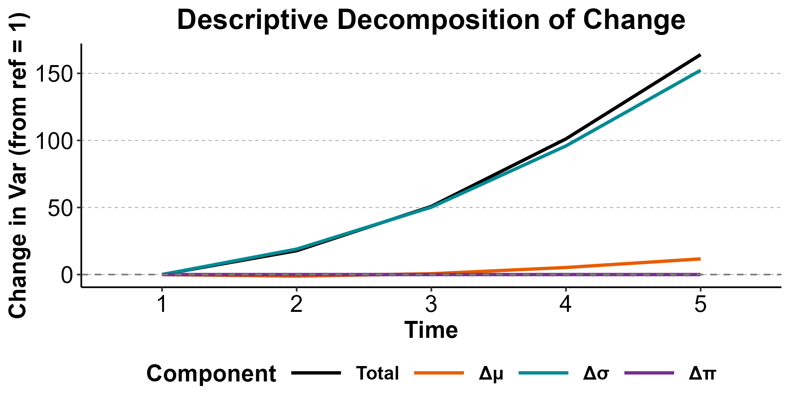
The default plot type is "decomp", which shows how
inequality changed relative to the reference period and decomposes that
change into
,
,
and
contributions.
Within/between levels
The type = "wibe" plot shows the raw within-group,
between-group, and total inequality at each time point:
plot(desc, type = "wibe")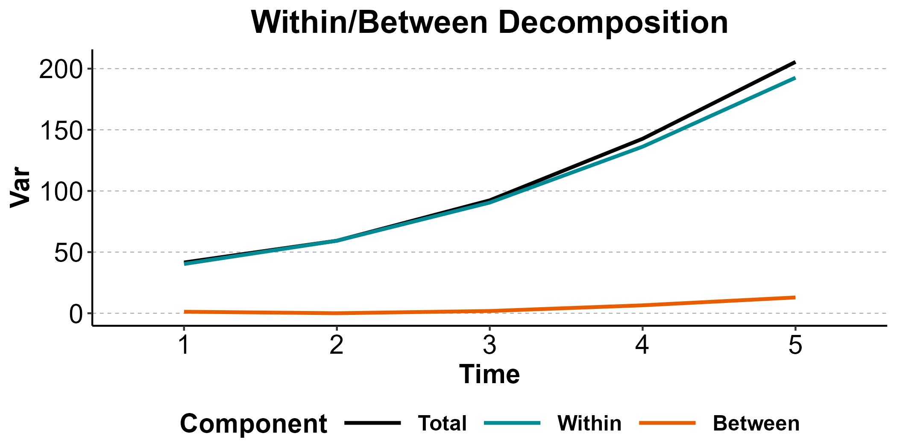
Group-level parameters
The type = "params" plot shows group-level means and
standard deviations over time. Pass ci = TRUE or
ci = "delta" to add confidence intervals:
plot(desc, type = "params")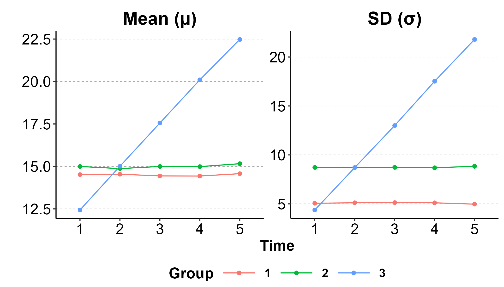
Inequality statistics
The type = "ineq" plot computes and displays overall
inequality statistics over time. You can choose from "V"
(variance), "VL" (log-variance), "CV2",
"Gini", and "Theil", or pass custom
functions:
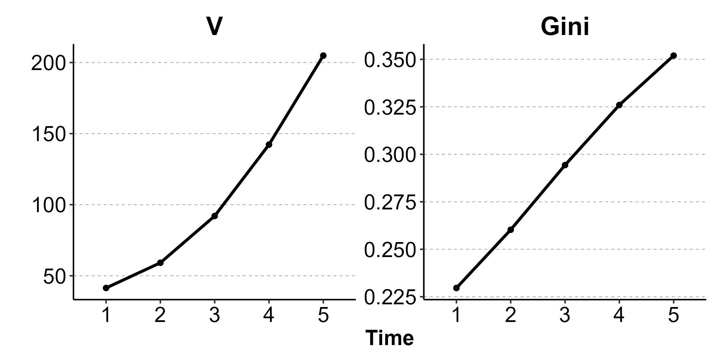
The type = "ineq.group" variant shows per-group
inequality statistics:
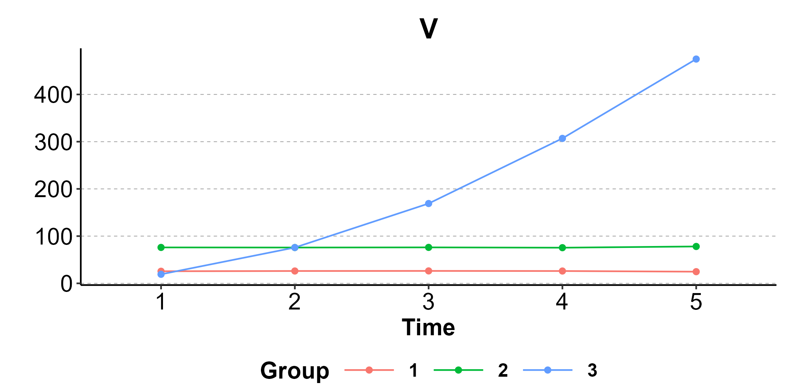
Counterfactual reference
You can decompose inequality relative to a counterfactual baseline by
passing a descriptive params object via params. Create it
with ineqx_params() using columns group,
pi, mu, sigma — this parallels
the causal path where params supplies the reference
state.
For example, to decompose the observed inequality into contributions from group means, dispersions, and composition relative to a world of perfect equality (all parameters zero, equal group shares):
ref <- ineqx_params(
data = data.frame(
group = 1:3,
pi = 1/3,
mu = 0,
sigma = 0
)
)
desc_ref <- ineqx(
y = "inc",
ystat = "Var",
group = "group",
time = "year",
params = ref,
data = incdat
)
#> Computing descriptive decomposition...
#> Finished.
print(desc_ref)
#> Descriptive variance decomposition
#> Inequality measure: Var
#> Reference period: 0
#> Ordering: shapley
#>
#> Totals by time:
#> time VarW VarB VarT
#> 0 0.00 0.00000 0.00
#> 1 40.28 1.23480 41.52
#> 2 59.28 0.03878 59.32
#> 3 90.50 1.83958 92.34
#> 4 136.19 6.49804 142.69
#> 5 192.58 12.92182 205.50
#>
#> Decomposition of changes in Var relative to counterfactual reference:
#>
#> time 0: (reference)
#>
#> time 1:
#> Between-group (delta_mu): 1.2348
#> Within-group (delta_sigma): 40.2821
#> Compositional (delta_pi): 0.0000
#> Between-group: 0.0000
#> Within-group: 0.0000
#> Total: 41.5169
#>
#> time 2:
#> Between-group (delta_mu): 0.0388
#> Within-group (delta_sigma): 59.2786
#> Compositional (delta_pi): 0.0000
#> Between-group: 0.0000
#> Within-group: 0.0000
#> Total: 59.3174
#>
#> time 3:
#> Between-group (delta_mu): 1.8396
#> Within-group (delta_sigma): 90.5024
#> Compositional (delta_pi): 0.0000
#> Between-group: 0.0000
#> Within-group: 0.0000
#> Total: 92.3419
#>
#> time 4:
#> Between-group (delta_mu): 6.4980
#> Within-group (delta_sigma): 136.1939
#> Compositional (delta_pi): 0.0000
#> Between-group: 0.0000
#> Within-group: 0.0000
#> Total: 142.6919
#>
#> time 5:
#> Between-group (delta_mu): 12.9218
#> Within-group (delta_sigma): 192.5815
#> Compositional (delta_pi): 0.0000
#> Between-group: 0.0000
#> Within-group: 0.0000
#> Total: 205.5033The deltas show how much each parameter contributes to the level of inequality at each time period: drives between-group inequality, drives within-group inequality, and captures the effect of unequal group sizes.
2. Causal decomposition
The causal decomposition answers a different question: how does a treatment affect inequality? It decomposes the treatment’s total effect on variance into:
- Between-group (behavioral): does treatment raise means more in some groups than others?
- Within-group (behavioral): does treatment compress or expand dispersion within groups?
Integrated estimation
The simplest approach: pass formulas and data directly to
ineqx(), which fits a GAMLSS model internally. Note that
formula_mu is one-sided — the outcome is specified via the
y argument:
result <- ineqx(
y = "inc",
treat = "x",
group = "group",
formula_mu = ~ x * factor(group),
formula_sigma = ~ x * factor(group),
se = "delta",
data = incdat
)
#> GAMLSS-RS iteration 1: Global Deviance = 16642.58
#> GAMLSS-RS iteration 2: Global Deviance = 16642.58
print(result)
#> Cross-sectional causal variance decomposition
#> Inequality measure: Var
#> SEs via delta method
#>
#> Treatment effect on outcome variance:
#> Var[Y | T = 0]: 0.9791 (SE = 0.0681)
#> Var[Y | T = 1]: 142.4776 (SE = 6.3270)
#> Total effect (tau_T): 141.4984 (SE = 6.3274)
#> Between-group (tau_B): 17.4602 (SE = 2.6803)
#> Within-group (tau_W): 124.0382 (SE = 5.7317)
#> -> Wald test H0: lambda = 0: chi2(3) = 7364.6732, p < 0.0001
#> Significant: evidence of treatment effect heterogeneity
#>
#> Between-group sub-components:
#> Var_pi(beta): 17.6956 (SE = 2.7254)
#> 2*Cov_pi(mu0, beta): -0.2354 (SE = 0.3985)
#>
#> Within-group sub-components:
#> mean(sigma0^2) * mean(f): 125.6536 (SE = 9.4712)
#> Cov_pi(sigma0^2, f): -1.6154 (SE = 7.4628)The default type = "wibe" shows the within- and
between-group treatment effects as a bar chart. The show
argument controls which sub-components to display (default:
c("tau", "cov")):
plot(result)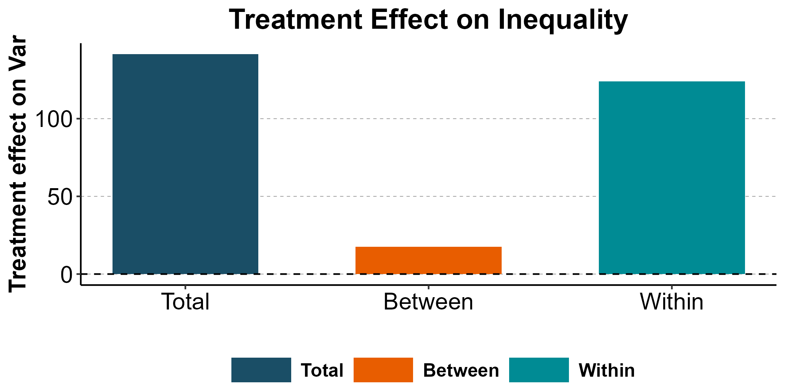
Group-level contributions
The type = "wibe.group" plot shows each group’s
contribution to the within-group and between-group treatment
effects:
plot(result, type = "wibe.group")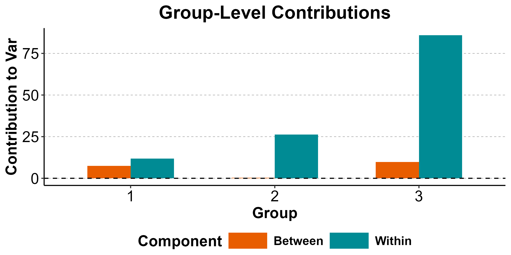
Treatment effect parameters
The type = "treat.params" plot shows the estimated
treatment effect parameters
(
and
)
by group:
plot(result, type = "treat.params")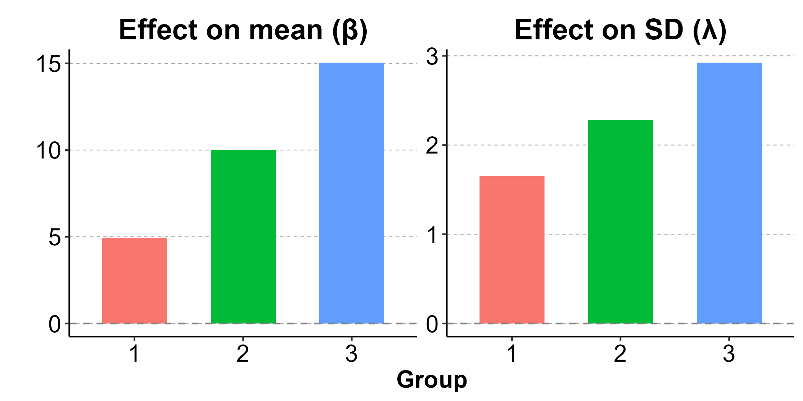
Predicted outcomes
The type = "outcome.params" plot compares predicted
group-level means and standard deviations under control versus
treatment:
plot(result, type = "outcome.params")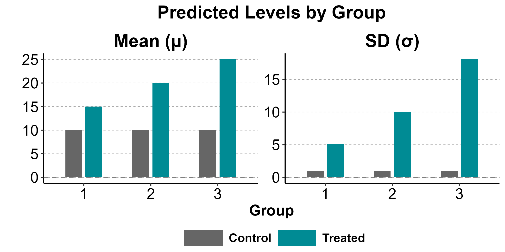
Treatment effect distributions
The type = "treat" plot overlays the predicted treatment
effect distributions for each group. Use type = "outcome"
to see the full predicted outcome distributions under control vs
treatment:
plot(result, type = "treat")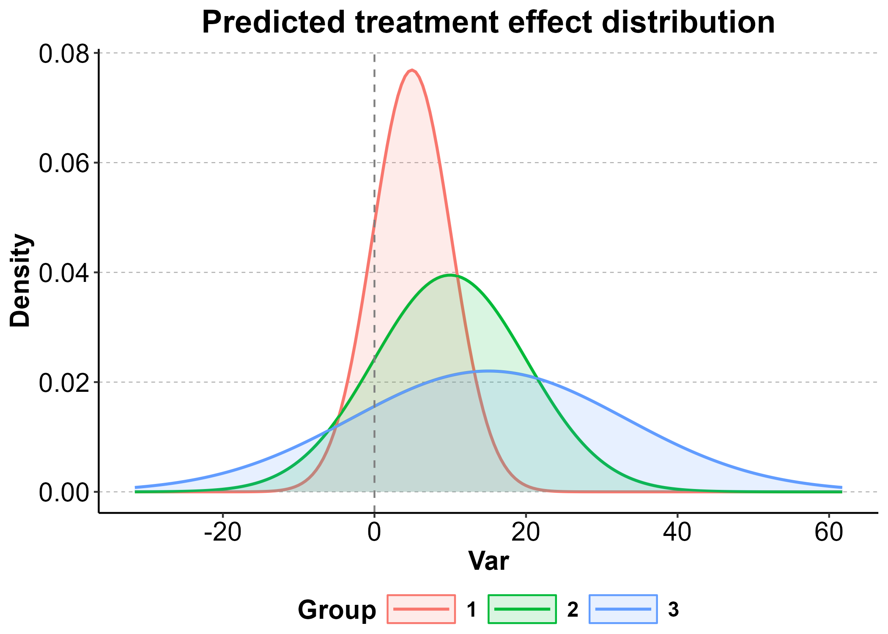
plot(result, type = "outcome")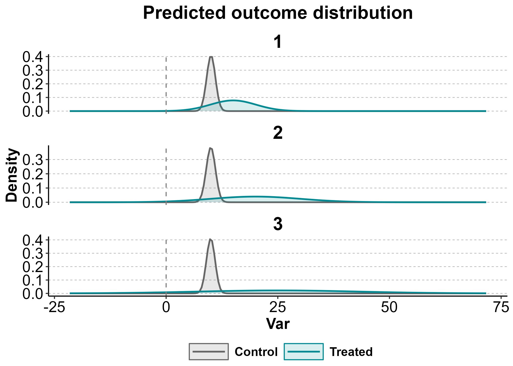
Externally estimated model
For more control, create an ineqx_params object first
and pass it to ineqx():
# Extract params from a gamlss model
params <- ineqx_params(
model = gamlss::gamlss(
inc ~ x * factor(group) + factor(year),
sigma.formula = ~ x * factor(group) + factor(year),
data = incdat, family = gamlss.dist::NO()
),
data = incdat,
treat = "x",
group = "group",
time = "year",
vcov = TRUE
)
#> GAMLSS-RS iteration 1: Global Deviance = 17539.56
#> GAMLSS-RS iteration 2: Global Deviance = 16626.77
#> GAMLSS-RS iteration 3: Global Deviance = 16626.49
#> GAMLSS-RS iteration 4: Global Deviance = 16626.49
print(params)
#> ineqx_params object
#> Type: longitudinal
#> Inequality measure: Var
#> Groups (3): 1, 2, 3
#> Time periods (5): 1, 2, 3, 4, 5
#>
#> Group-level parameters:
#>
#> time 1:
#> group pi mu0 sigma0 beta lambda
#> 1 0.4737 10.000 0.9100 4.951 1.652
#> 2 0.2632 9.954 0.9620 9.995 2.274
#> 3 0.2632 9.944 0.9028 14.365 2.894
#>
#> time 2:
#> group pi mu0 sigma0 beta lambda
#> 1 0.4737 9.966 0.9507 4.951 1.652
#> 2 0.2632 9.920 1.0050 9.995 2.274
#> 3 0.2632 9.911 0.9431 14.365 2.894
#>
#> time 3:
#> group pi mu0 sigma0 beta lambda
#> 1 0.4737 10.10 0.9916 4.951 1.652
#> 2 0.2632 10.05 1.0482 9.995 2.274
#> 3 0.2632 10.05 0.9837 14.365 2.894
#>
#> time 4:
#> group pi mu0 sigma0 beta lambda
#> 1 0.4737 10.08 1.0018 4.951 1.652
#> 2 0.2632 10.04 1.0591 9.995 2.274
#> 3 0.2632 10.03 0.9939 14.365 2.894
#>
#> time 5:
#> group pi mu0 sigma0 beta lambda
#> 1 0.4737 10.10 1.051 4.951 1.652
#> 2 0.2632 10.06 1.111 9.995 2.274
#> 3 0.2632 10.05 1.042 14.365 2.894
#>
#> vcov: 5 time periodsLongitudinal causal decomposition
With longitudinal parameters, ineqx() automatically
performs the longitudinal decomposition:
result_longit <- ineqx(
"inc",
group = "group",
ref = 1,
order = c("behavioral", "compositional", "pretreatment"),
params = params,
se = "delta",
data = incdat
)
#> Computing decomposition...
#> Finished.
print(result_longit)
#> Longitudinal causal variance decomposition
#> Inequality measure: Var
#> SEs via delta method
#> Reference period: 1
#> Ordering: behavioral -> compositional -> pretreatment
#>
#> Treatment effect on variance by time:
#> (tau_B = Var(beta) + 2Cov(mu,beta); tau_W = E(sigma^2)*E(f) + Cov(sigma^2,f); tau_T = tau_B + tau_W)
#>
#> time Var(beta) 2Cov(mu,beta) tau_B E(sigma2)*E(f) Cov(sigma2,f) tau_W tau_T lambda=0
#> 1 15.5392 -0.1934 15.3459 104.1931 -1.4450 102.7481 118.0939 <0.001
#> SE (2.4384) (0.3789) (2.3962) (9.4268) (6.0948) (7.0774) (7.4720)
#> 2 15.5392 -0.1934 15.3459 113.7054 -1.5770 112.1285 127.4743 <0.001
#> SE (2.4384) (0.3789) (2.3962) (10.2875) (6.6513) (7.7235) (8.0867)
#> 3 15.5392 -0.1934 15.3459 123.7010 -1.7156 121.9854 137.3313 <0.001
#> SE (2.4384) (0.3789) (2.3962) (11.1918) (7.2360) (8.4024) (8.7374)
#> 4 15.5392 -0.1934 15.3459 126.2725 -1.7512 124.5213 139.8671 <0.001
#> SE (2.4384) (0.3789) (2.3962) (11.4245) (7.3864) (8.5771) (8.9055)
#> 5 15.5392 -0.1934 15.3459 138.8845 -1.9262 136.9583 152.3042 <0.001
#> SE (2.4384) (0.3789) (2.3962) (12.5655) (8.1241) (9.4338) (9.7334)
#>
#> Decomposition of changes in group-specific treatment effects on variance relative to ref = 1:
#>
#> time 1: (reference)
#>
#> time 2:
#> Effects on means (delta_beta): 0.0000 (SE = 3.4297)
#> Effects on SDs (delta_lambda): -0.0000 (SE = 9.5802)
#> Distribution of treatment (delta_pi): 0.0000 (SE = 0.0000)
#> Between-group: 0.0000
#> Within-group: 0.0000
#> Pre-treatment inequality (delta_pre): 9.3804 (SE = 10.4581)
#> Means: -0.0000
#> Variances: 9.3804
#> Total: 9.3804 (SE = 11.0102)
#>
#> time 3:
#> Effects on means (delta_beta): 0.0000 (SE = 3.4297)
#> Effects on SDs (delta_lambda): -0.0000 (SE = 9.5802)
#> Distribution of treatment (delta_pi): 0.0000 (SE = 0.0000)
#> Between-group: 0.0000
#> Within-group: 0.0000
#> Pre-treatment inequality (delta_pre): 19.2373 (SE = 10.7741)
#> Means: 0.0000
#> Variances: 19.2373
#> Total: 19.2373 (SE = 11.4967)
#>
#> time 4:
#> Effects on means (delta_beta): 0.0000 (SE = 3.4297)
#> Effects on SDs (delta_lambda): -0.0000 (SE = 9.5802)
#> Distribution of treatment (delta_pi): 0.0000 (SE = 0.0000)
#> Between-group: 0.0000
#> Within-group: 0.0000
#> Pre-treatment inequality (delta_pre): 21.7732 (SE = 10.8608)
#> Means: 0.0000
#> Variances: 21.7732
#> Total: 21.7732 (SE = 11.6250)
#>
#> time 5:
#> Effects on means (delta_beta): 0.0000 (SE = 3.4297)
#> Effects on SDs (delta_lambda): 0.0000 (SE = 9.5802)
#> Distribution of treatment (delta_pi): 0.0000 (SE = 0.0000)
#> Between-group: 0.0000
#> Within-group: 0.0000
#> Pre-treatment inequality (delta_pre): 34.2102 (SE = 11.3153)
#> Means: -0.0000
#> Variances: 34.2102
#> Total: 34.2102 (SE = 12.2707)The default type = "decomp" shows the three-component
decomposition (behavioral, compositional, pre-treatment) of changes
relative to the reference:
plot(result_longit)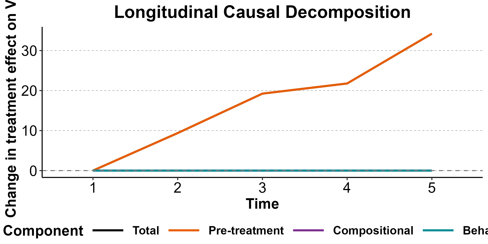
Six sub-component decomposition
Setting show to individual delta components displays the
six sub-components
(,
,
,
,
,
):
plot(result_longit, type = "decomp",
show = c("delta_beta", "delta_lambda", "delta_pi_b",
"delta_pi_w", "delta_mu", "delta_sigma"))
Within- and between-group treatment effects
The type = "wibe" plot shows the levels of the
cross-sectional treatment effects
(,
)
at each time point, rather than changes from the reference. The
show argument controls which sub-components to display
(default: c("tau_b", "tau_w"); also available:
"het_b", "cov_b", "het_w",
"cov_w"):
plot(result_longit, type = "wibe")
#> Ignoring unknown labels:
#> • fill : ""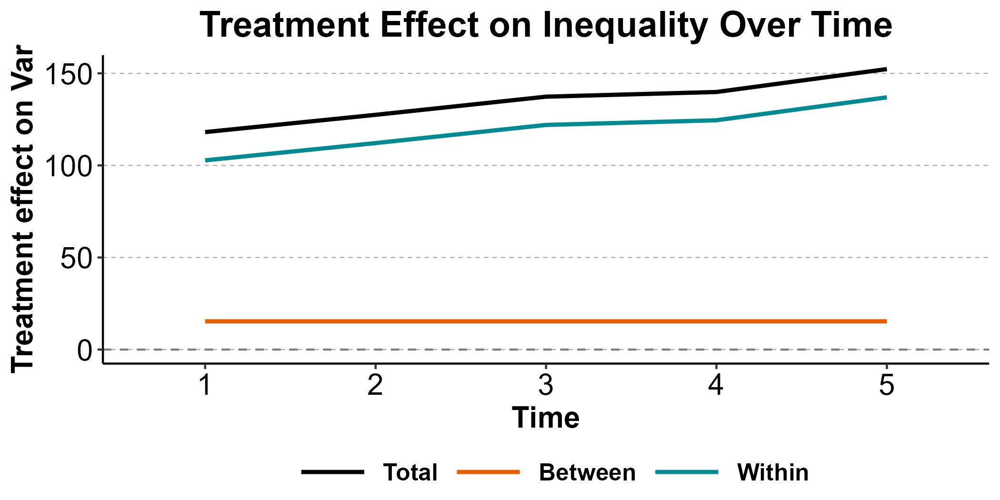
Shapley values
Since the longitudinal decomposition depends on the ordering, you can
average across all 6 orderings with order = "shapley":
result_shapley <- ineqx("inc", group = "group", ref = 1,
params = params, order = "shapley",
se = "none", data = incdat)
#> Computing decomposition...
#> Finished.
print(result_shapley)
#> Longitudinal causal variance decomposition
#> Inequality measure: Var
#> Reference period: 1
#> Ordering: Shapley (averaged across all 6 orderings)
#>
#> Treatment effect on variance by time:
#> (tau_B = Var(beta) + 2Cov(mu,beta); tau_W = E(sigma^2)*E(f) + Cov(sigma^2,f); tau_T = tau_B + tau_W)
#>
#> time Var(beta) 2Cov(mu,beta) tau_B E(sigma2)*E(f) Cov(sigma2,f) tau_W tau_T
#> 1 15.5392 -0.1934 15.3459 104.1931 -1.4450 102.7481 118.0939
#> 2 15.5392 -0.1934 15.3459 113.7054 -1.5770 112.1285 127.4743
#> 3 15.5392 -0.1934 15.3459 123.7010 -1.7156 121.9854 137.3313
#> 4 15.5392 -0.1934 15.3459 126.2725 -1.7512 124.5213 139.8671
#> 5 15.5392 -0.1934 15.3459 138.8845 -1.9262 136.9583 152.3042
#>
#> Decomposition of changes in group-specific treatment effects on variance relative to ref = 1:
#>
#> time 1: (reference)
#>
#> time 2:
#> Effects on means (delta_beta): 0.0000
#> Effects on SDs (delta_lambda): -0.0000
#> Distribution of treatment (delta_pi): 0.0000
#> Between-group: 0.0000
#> Within-group: 0.0000
#> Pre-treatment inequality (delta_pre): 9.3804
#> Means: -0.0000
#> Variances: 9.3804
#> Total: 9.3804
#>
#> time 3:
#> Effects on means (delta_beta): 0.0000
#> Effects on SDs (delta_lambda): -0.0000
#> Distribution of treatment (delta_pi): 0.0000
#> Between-group: 0.0000
#> Within-group: 0.0000
#> Pre-treatment inequality (delta_pre): 19.2373
#> Means: 0.0000
#> Variances: 19.2373
#> Total: 19.2373
#>
#> time 4:
#> Effects on means (delta_beta): 0.0000
#> Effects on SDs (delta_lambda): -0.0000
#> Distribution of treatment (delta_pi): 0.0000
#> Between-group: 0.0000
#> Within-group: 0.0000
#> Pre-treatment inequality (delta_pre): 21.7732
#> Means: 0.0000
#> Variances: 21.7732
#> Total: 21.7732
#>
#> time 5:
#> Effects on means (delta_beta): 0.0000
#> Effects on SDs (delta_lambda): 0.0000
#> Distribution of treatment (delta_pi): 0.0000
#> Between-group: 0.0000
#> Within-group: 0.0000
#> Pre-treatment inequality (delta_pre): 34.2102
#> Means: -0.0000
#> Variances: 34.2102
#> Total: 34.2102
plot(result_shapley)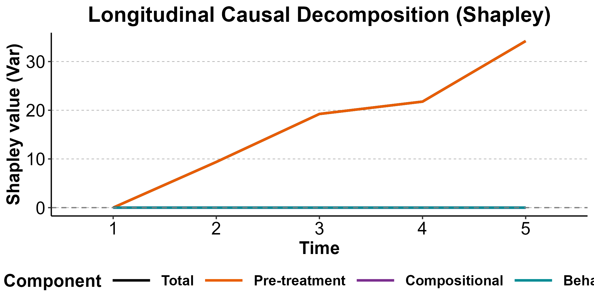
The type = "shapley" plot shows the Shapley-averaged
values with ribbons indicating the range across orderings — useful for
assessing ordering dependence:
plot(result_shapley, type = "shapley")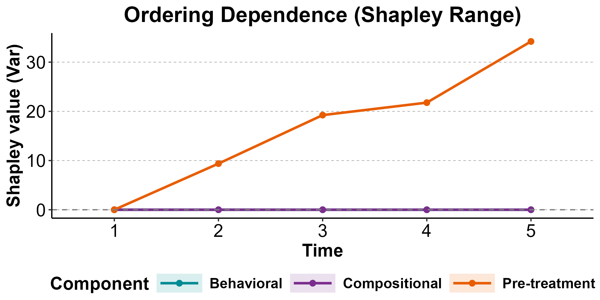
Treatment effect parameters over time
The type = "treat.params" plot shows the estimated
treatment effect parameters
(
and
)
by group over time:
plot(result_shapley, type = "treat.params")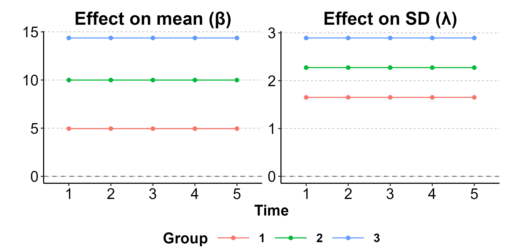
Predicted outcomes over time
The type = "outcome.params" plot compares predicted
group-level means and standard deviations under control versus treatment
over time:
plot(result_shapley, type = "outcome.params")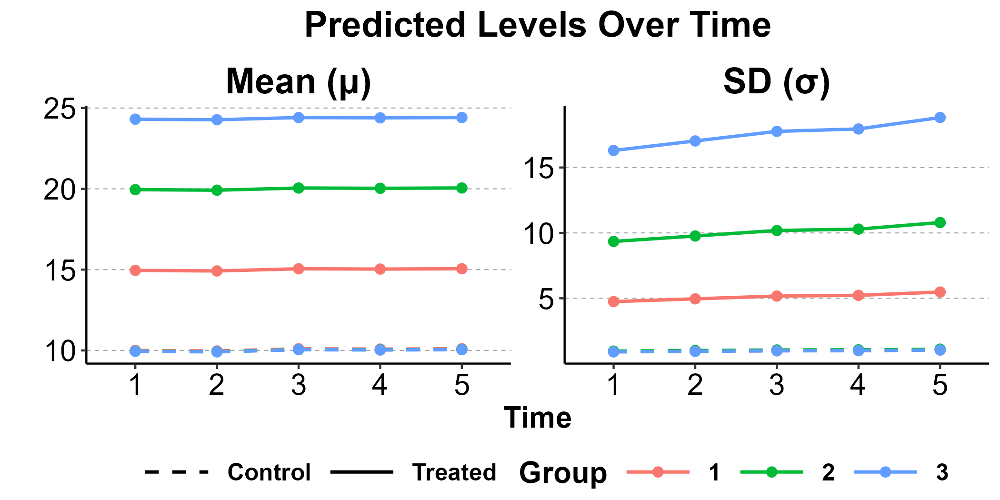
Predicted distributions
The type = "treat" plot shows predicted treatment effect
distributions. When time is specified, it shows per-group
distributions at that time point. When time = NULL
(default), it shows pi-weighted marginal distributions across all time
points. Use type = "outcome" for predicted outcome
distributions:
plot(result_shapley, type = "treat", time = 3)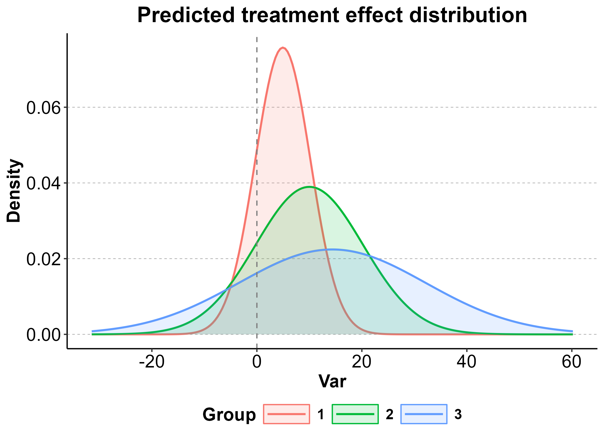
plot(result_shapley, type = "treat")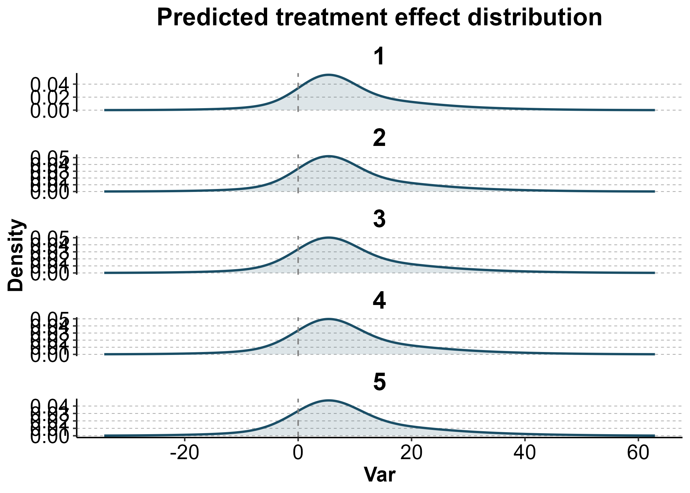
Counterfactual reference (causal)
Just as the descriptive decomposition supports a counterfactual baseline, the causal decomposition can blend user-provided counterfactual parameters with model-estimated parameters from data. This answers questions like: “How did treatment effects on inequality evolve relative to a hypothetical baseline?”
Provide an ineqx_params object (with causal columns
mu0, sigma0, beta,
lambda) together with treat,
formula_mu, and formula_sigma. The function
fits a GAMLSS model on the data, then blends the model-estimated
parameters with your counterfactual scenarios.
You can specify counterfactual parameters at multiple time points. Periods covered by your params override the model estimates, while remaining periods are estimated from data. Here we place two counterfactual scenarios — one at the beginning (time 0: no treatment effect) and one in the middle (time 3: moderate, uniform treatment effect) — with data-estimated periods in between:
# Two counterfactual scenarios at time 0 and time 3
cf_ref <- ineqx_params(
data = data.frame(
group = rep(1:3, 2),
time = rep(c(0, 3), each = 3),
pi = 1/3,
mu0 = 10,
sigma0 = 1,
# time 0: no treatment effect
# time 3: moderate uniform treatment effect
beta = c(0, 0, 0, 5, 5, 5),
lambda = c(0, 0, 0, 1, 1, 1)
)
)
result_blend <- ineqx(
y = "inc",
treat = "x",
group = "group",
time = "year",
params = cf_ref,
ref = 0,
formula_mu = ~ x * factor(group) + factor(year),
formula_sigma = ~ x * factor(group) + factor(year),
se = "none",
data = incdat
)
#> GAMLSS-RS iteration 1: Global Deviance = 17539.56
#> GAMLSS-RS iteration 2: Global Deviance = 16626.77
#> GAMLSS-RS iteration 3: Global Deviance = 16626.49
#> GAMLSS-RS iteration 4: Global Deviance = 16626.49
print(result_blend)
#> Longitudinal causal variance decomposition
#> Inequality measure: Var
#> Reference period: 0
#> Ordering: Shapley (averaged across all 6 orderings)
#>
#> Treatment effect on variance by time:
#> (tau_B = Var(beta) + 2Cov(mu,beta); tau_W = E(sigma^2)*E(f) + Cov(sigma^2,f); tau_T = tau_B + tau_W)
#>
#> time Var(beta) 2Cov(mu,beta) tau_B E(sigma2)*E(f) Cov(sigma2,f) tau_W tau_T
#> 0 0.0000 0.0000 0.0000 0.0000 0.0000 0.0000 0.0000
#> 1 15.5392 -0.1934 15.3459 104.1931 -1.4450 102.7481 118.0939
#> 2 15.5392 -0.1934 15.3459 113.7054 -1.5770 112.1285 127.4743
#> 3 0.0000 0.0000 0.0000 6.3891 0.0000 6.3891 6.3891
#> 4 15.5392 -0.1934 15.3459 126.2725 -1.7512 124.5213 139.8671
#> 5 15.5392 -0.1934 15.3459 138.8845 -1.9262 136.9583 152.3042
#>
#> Decomposition of changes in group-specific treatment effects on variance relative to ref = 0:
#>
#> time 0: (reference)
#>
#> time 1:
#> Effects on means (delta_beta): 15.0727
#> Effects on SDs (delta_lambda): 124.8056
#> Distribution of treatment (delta_pi): -11.1188
#> Between-group: 0.3671
#> Within-group: -11.4859
#> Pre-treatment inequality (delta_pre): -10.6655
#> Means: -0.0939
#> Variances: -10.5716
#> Total: 118.0939
#>
#> time 2:
#> Effects on means (delta_beta): 15.0727
#> Effects on SDs (delta_lambda): 129.8247
#> Distribution of treatment (delta_pi): -11.7766
#> Between-group: 0.3671
#> Within-group: -12.1436
#> Pre-treatment inequality (delta_pre): -5.6464
#> Means: -0.0939
#> Variances: -5.5525
#> Total: 127.4743
#>
#> time 3:
#> Effects on means (delta_beta): 0.0000
#> Effects on SDs (delta_lambda): 6.3891
#> Distribution of treatment (delta_pi): 0.0000
#> Between-group: 0.0000
#> Within-group: 0.0000
#> Pre-treatment inequality (delta_pre): 0.0000
#> Means: 0.0000
#> Variances: 0.0000
#> Total: 6.3891
#>
#> time 4:
#> Effects on means (delta_beta): 15.0727
#> Effects on SDs (delta_lambda): 136.4555
#> Distribution of treatment (delta_pi): -12.6455
#> Between-group: 0.3671
#> Within-group: -13.0126
#> Pre-treatment inequality (delta_pre): 0.9844
#> Means: -0.0939
#> Variances: 1.0783
#> Total: 139.8671
#>
#> time 5:
#> Effects on means (delta_beta): 15.0727
#> Effects on SDs (delta_lambda): 143.1101
#> Distribution of treatment (delta_pi): -13.5176
#> Between-group: 0.3671
#> Within-group: -13.8846
#> Pre-treatment inequality (delta_pre): 7.6390
#> Means: -0.0939
#> Variances: 7.7329
#> Total: 152.3042Time 0 and time 3 use the counterfactual parameters; times 1, 2, 4, and 5 are estimated from data via GAMLSS. The longitudinal decomposition shows how treatment effects on inequality evolved across all periods relative to the reference (time 0).
Note: delta method SEs are not available for blended parameters. Use
boot_config() for bootstrap SEs if needed.
Comparing scenarios
The compare() function stacks multiple ineqx results for
side-by-side comparison. This is useful for contrasting an observed
decomposition with one or more counterfactual baselines:
comp <- compare(Observed = result_shapley, Counterfactual = result_blend)
#> Warning in compare(Observed = result_shapley, Counterfactual = result_blend):
#> Objects have different reference periods: 1, 0. Using ref = 1
print(comp)
#> Comparison of 2 scenarios (ineqx_causal_longit, Var)
#> Reference: 1
#> Scenarios: Observed, Counterfactual
#>
#> Decomposition by time and scenario:
#> time component Observed Counterfactual
#> 0 behavioral NA 0.0000
#> 0 compositional NA 0.0000
#> 0 delta_beta NA 0.0000
#> 0 delta_lambda NA 0.0000
#> 0 delta_mu NA 0.0000
#> 0 delta_pi_b NA 0.0000
#> 0 delta_pi_w NA 0.0000
#> 0 delta_sigma NA 0.0000
#> 0 pretreatment NA 0.0000
#> 1 behavioral 0.0000 139.8783
#> 1 compositional 0.0000 -11.1188
#> 1 delta_beta 0.0000 15.0727
#> 1 delta_lambda 0.0000 124.8056
#> 1 delta_mu 0.0000 -0.0939
#> 1 delta_pi_b 0.0000 0.3671
#> 1 delta_pi_w 0.0000 -11.4859
#> 1 delta_sigma 0.0000 -10.5716
#> 1 pretreatment 0.0000 -10.6655
#> 2 behavioral 0.0000 144.8974
#> 2 compositional 0.0000 -11.7766
#> 2 delta_beta 0.0000 15.0727
#> 2 delta_lambda 0.0000 129.8247
#> 2 delta_mu 0.0000 -0.0939
#> 2 delta_pi_b 0.0000 0.3671
#> 2 delta_pi_w 0.0000 -12.1436
#> 2 delta_sigma 9.3804 -5.5525
#> 2 pretreatment 9.3804 -5.6464
#> 3 behavioral 0.0000 6.3891
#> 3 compositional 0.0000 0.0000
#> 3 delta_beta 0.0000 0.0000
#> 3 delta_lambda 0.0000 6.3891
#> 3 delta_mu 0.0000 0.0000
#> 3 delta_pi_b 0.0000 0.0000
#> 3 delta_pi_w 0.0000 0.0000
#> 3 delta_sigma 19.2373 0.0000
#> 3 pretreatment 19.2373 0.0000
#> 4 behavioral 0.0000 151.5282
#> 4 compositional 0.0000 -12.6455
#> 4 delta_beta 0.0000 15.0727
#> 4 delta_lambda 0.0000 136.4555
#> 4 delta_mu 0.0000 -0.0939
#> 4 delta_pi_b 0.0000 0.3671
#> 4 delta_pi_w 0.0000 -13.0126
#> 4 delta_sigma 21.7732 1.0783
#> 4 pretreatment 21.7732 0.9844
#> 5 behavioral 0.0000 158.1828
#> 5 compositional 0.0000 -13.5176
#> 5 delta_beta 0.0000 15.0727
#> 5 delta_lambda 0.0000 143.1101
#> 5 delta_mu 0.0000 -0.0939
#> 5 delta_pi_b 0.0000 0.3671
#> 5 delta_pi_w 0.0000 -13.8846
#> 5 delta_sigma 34.2102 7.7329
#> 5 pretreatment 34.2102 7.6390The default type = "decomp" plot uses color for the
decomposition component and linetype for the scenario:
plot(comp, type = "decomp")
Use show to display individual sub-components:
plot(comp, type = "decomp",
show = c("delta_beta", "delta_lambda", "delta_pi_b",
"delta_pi_w", "delta_mu", "delta_sigma"))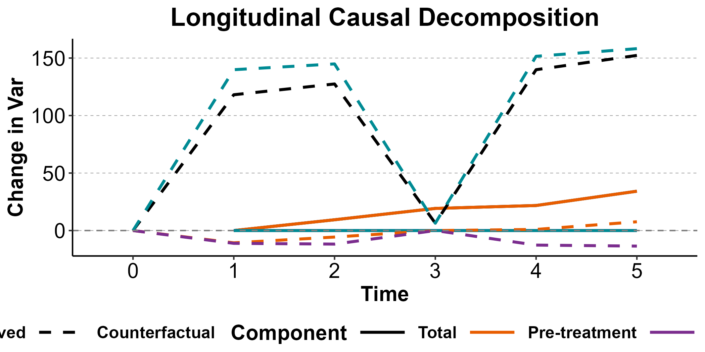
The type = "wibe" plot compares within/between treatment
effect levels across scenarios:
plot(comp, type = "wibe")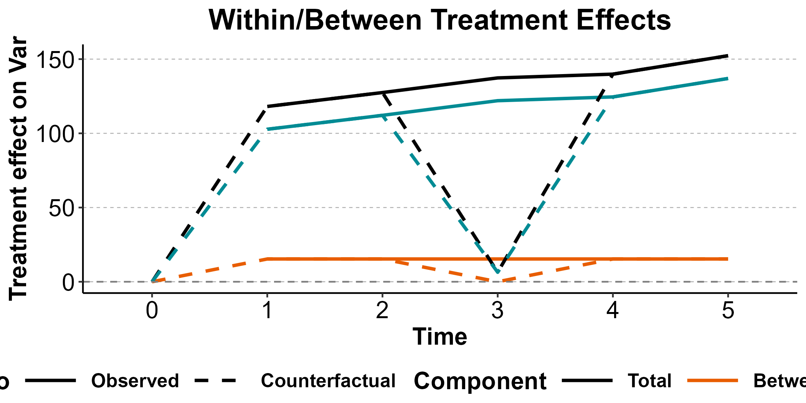
The underlying stacked data is accessible via
comp$data.
3. Using an external GAMLSS model
If you want full control over the model specification (e.g.,
different distributions, random effects, custom controls), fit a
gamlss model yourself and pass it to
ineqx_params():
library(gamlss)
# Fit your own GAMLSS
my_model <- gamlss(
formula = inc ~ x * factor(group) + factor(t),
sigma.formula = ~ x * factor(group) + factor(t),
data = incdat,
family = NO(),
trace = FALSE
)
# Extract parameters
params_ext <- ineqx_params(
model = my_model,
data = incdat,
treat = "x",
group = "group",
vcov = TRUE
)
print(params_ext)
#> ineqx_params object
#> Type: cross_sectional
#> Inequality measure: Var
#> Groups (3): 1, 2, 3
#>
#> Group-level parameters:
#> group pi mu0 sigma0 beta lambda
#> 1 0.4737 13.87 4.191 0.1415 -0.3171
#> 2 0.2632 13.82 4.373 0.3946 0.2629
#> 3 0.2632 13.84 4.230 0.6273 0.9472
#>
#> vcov: 12x12
# Decompose
ineqx(y="inc", group = "group", params = params_ext, data = incdat)
#> Cross-sectional causal variance decomposition
#> Inequality measure: Var
#> SEs via delta method
#>
#> Treatment effect on outcome variance:
#> Var[Y | T = 0]: 18.0601 (SE = 1.2547)
#> Var[Y | T = 1]: 44.2609 (SE = 2.0622)
#> Total effect (tau_T): 26.2008 (SE = 2.4139)
#> Between-group (tau_B): 0.0347 (SE = 0.0262)
#> Within-group (tau_W): 26.1662 (SE = 2.4138)
#> -> Wald test H0: lambda = 0: chi2(3) = 501.2301, p < 0.0001
#> Significant: evidence of treatment effect heterogeneity
#>
#> Between-group sub-components:
#> Var_pi(beta): 0.0412 (SE = 0.0397)
#> 2*Cov_pi(mu0, beta): -0.0065 (SE = 0.0321)
#>
#> Within-group sub-components:
#> mean(sigma0^2) * mean(f): 26.1136 (SE = 2.8073)
#> Cov_pi(sigma0^2, f): 0.0526 (SE = 2.5861)Manual parameter specification
You can also construct ineqx_params by hand — useful for
simulation studies, sensitivity analyses, or replicating results from
other software:
params_manual <- ineqx_params(
data = data.frame(
group = c("low", "mid", "high"),
pi = c(0.4, 0.35, 0.25),
mu0 = c(300, 600, 1200),
sigma0 = c(100, 200, 500),
beta = c(50, 80, 120),
lambda = c(-0.05, -0.10, -0.15)
),
ystat = "Var"
)
ineqx(y="inc", group = "group", params = params_manual,
se = "none", data = incdat)
#> Computing decomposition...
#> Finished.
#> Cross-sectional causal variance decomposition
#> Inequality measure: Var
#>
#> Treatment effect on outcome variance:
#> Var[Y | T = 0]: 205600.0000
#> Var[Y | T = 1]: 206558.7190
#> Total effect (tau_T): 958.7190
#> Between-group (tau_B): 20076.0000
#> Within-group (tau_W): -19117.2810
#>
#> Between-group sub-components:
#> Var_pi(beta): 756.0000
#> 2*Cov_pi(mu0, beta): 19320.0000
#>
#> Within-group sub-components:
#> mean(sigma0^2) * mean(f): -13387.5295
#> Cov_pi(sigma0^2, f): -5729.7515Summary
| Workflow | Call | Input |
|---|---|---|
| Descriptive | ineqx(y, group, data=...) |
Raw data |
| Descriptive (counterfactual ref) |
ineqx_params(data=...) then
ineqx(y, group, params=..., data=...)
|
Reference params + raw data |
| Causal (integrated) | ineqx(y, treat, group, formula_mu=..., data=...) |
Raw data + treatment |
| Causal (counterfactual ref) |
ineqx_params(data=...) then
ineqx(y, treat, group, params=..., formula_mu=..., data=...)
|
Reference params + raw data + treatment |
| Causal (external model) |
ineqx_params(model=...) then
ineqx(y, group, params=..., data=...)
|
Fitted gamlss |
| Causal (manual) |
ineqx_params(data=...) then
ineqx(y, group, params=..., data=...)
|
Parameter data.frame |
For details on the methodology, see vignette("model").
For more examples, see vignette("examples").